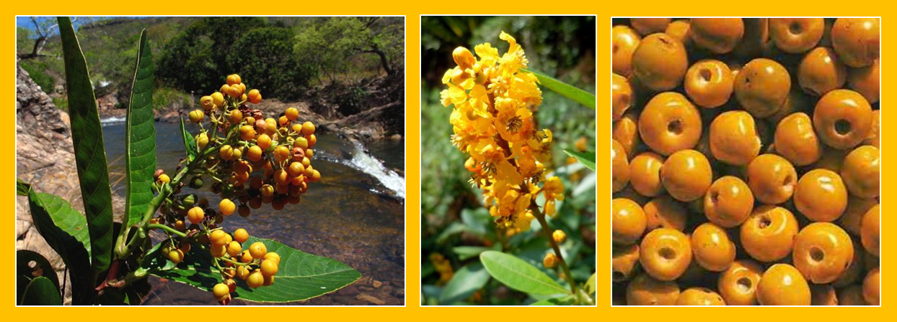
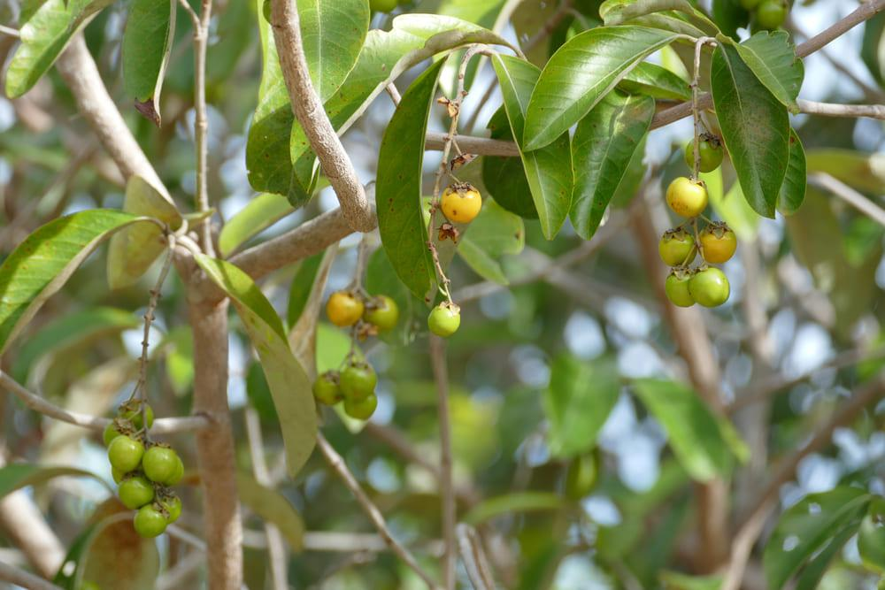

Murici
De origem brasileira, o murici pertence ao gênero Byrsonima e à família Malpighiaceae, mesma família da acerola.
Estima-se que o gênero Byrsonima tenha mais de 200 espécies, sendo que 100 delas estão distribuídas pelo país, nos estados de Alagoas, Bahia, Goiás, Minas Gerais, Mato Grosso, Mato Grosso do Sul, Pará, Paraná, São Paulo, Tocantins e Distrito Federal, com a maioria podendo ser encontrada na região amazônica. De acordo com suas variedades, as espécies de murici distinguem-se por suas cores e locais de ocorrência, sendo conhecidas como mirici, muricizinho, orelha-de-burro, douradinha-falsa, orelha-de-viado, murici-amarelo, murici-branco, murici-vermelho, murici-de-flor-branca, murici-de-flor-vermelha, murici-da-chapada, murici-da-mata, murici-da-serra, murici-das-capoeiras, murici-do-campo, murici-do-brejo e murici-da-praia.
Na região Nordeste o murici é amplamente comercializado, e em termos comerciais pode ser comparado à pitomba, caju e jambo. Muitas pessoas, principalmente a população carente, utiliza a polpa dessa fruta misturada à farinha, resultando em um prato calórico e nutritivo. A polpa também é muito utilizada na preparação de doces, sorvetes e licores. O muricizeiro pode ser considerado uma árvore ornamental, por florescer e frutificar durante o ano todo.
Carcterísticas do Murici

No cerrado, a árvore do murici pode atingir até 4 metros de altura, com folhas grandes e pilosas (para proteger as gemas apicais da ação do fogo). Com sabor forte e agridoce, é consumido in natura e na preparação de sorvetes, licores e doces. Seus frutos também são muito utilizados para aromatizar e amaciar a cachaça, por possuírem sabor e aroma peculiares e intensos.
A madeira da árvore do murici-do-cerrado pode ser empregada na construção civil e também na confecção de móveis de luxo, por ser de cor avermelhada ou amarelada, acetinada e brilhante.
Em algumas regiões do país as folhas do murici são utilizadas na medicina caseira, no combate à tosse e bronquite, e ainda como laxante. As folhas também são consumidas pelo gado, o que lhe confere grande potencial forrageiro. A casca da árvore serve como antitérmico, e por ser adstringente, pode ser utilizada em curtumes. Da casca também se extrai um corante preto empregado na indústria de tecidos.
Onde encontramos a murici
O Murici é encontrado em toda a América Latina. É um fruto nativo do Cerrado e muito apreciado nas regiões norte e nordeste do Brasil, onde ocorre com maior incidência. No Tocantins a espécie Byrsonima orbignyana.
A espécie, de pequeno porte, atinge cerca de cinco metros de altura, podendo ser plantada em quintais e calçadas. Floresce mais de uma vez ao ano, e seus frutos, de sabor intenso, são muito apreciados na produção sucos, sorvetes, geleias e também na saborização de aguardentes. Suas folhas, cascas e frutos são muito utilizados na medicina popular, como cicatrizantes, anti-inflamatórios e antifebril. Para conhecer mais sobre o Murici, assista os nossos vídeos, ouça nossos podcasts e nos acompanhe nas nossas redes sociais